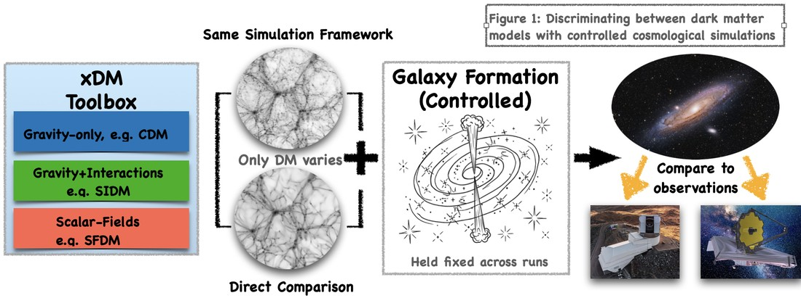
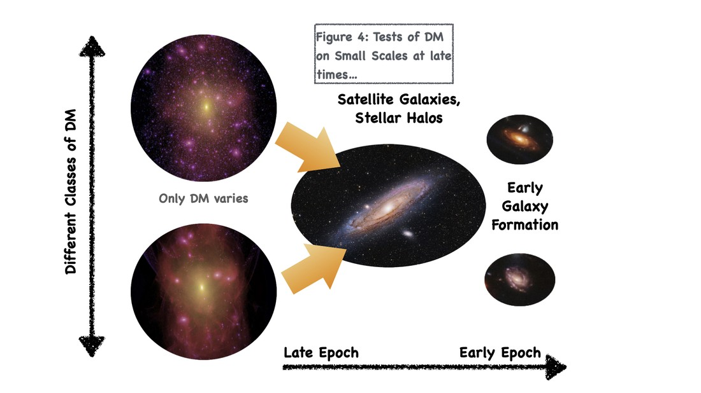
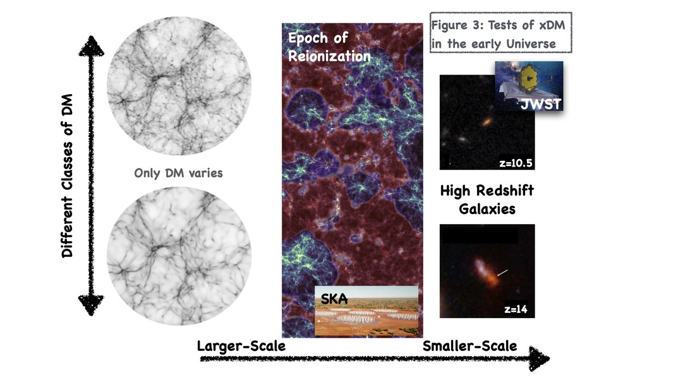

My research follows one thread from several directions: how different dark matter physics shapes halo and galaxy structure, how baryonic physics can produce changes that look similar, and how much of that difference survives into something we can actually observe and infer. The sections below are related rather than separate — most of what I do touches more than one of them.
I am interested in the nature of dark matter, and in what observations of galaxies and large-scale structure can actually tell us about it. It helps to separate the alternatives to cold dark matter into three broad classes: gravity-only models, such as cold or warm dark matter, where the physics is set by the initial power spectrum; models with additional interactions, such as self-interacting dark matter, where short-range interactions redistribute energy within haloes; and scalar-field models, such as fuzzy or axion-like dark matter, where a very light particle mass produces wave-like behaviour on astrophysical scales.
Different dark matter physics produces different halo and galaxy structure. The difficulty is that baryonic physics — feedback from stars and black holes, in particular — can produce changes that look much the same. Running matched simulations, in which only the dark matter physics changes and the galaxy-formation model is held fixed, gives a way of isolating the dark matter contribution: differences in outcome can then be traced to the dark matter model within that common framework, rather than being introduced by changing the feedback prescription. That does not remove every source of modelling uncertainty, but it turns an otherwise confounded comparison into a controlled one. The question that remains is how much of that difference survives as an observational constraint, once realistic observational effects are taken into account. I refer to this general problem — testing dark matter across its different classes on a like-for-like basis — as extended dark matter, or xDM.

Dark matter and baryonic physics act together to determine the structure and dynamics of galaxies. I work on questions of galaxy and halo structure, disc stability, baryonic contraction, and how simulated galaxies compare with observed ones.

Much of this work is done with large cosmological simulations, including zoom simulations of individual haloes. I am interested both in using simulations to answer scientific questions and in the numerical and computational methods that make those calculations tractable in the first place. An early example was working out the numerical convergence criteria needed to judge whether a simulated dark matter halo's inner structure can be trusted (Power et al. 2003); those criteria are still widely used to set the resolution of cosmological simulations.

I like building things other researchers can use: simulation infrastructure, scientific software, reproducible computational workflows, and tools that make complicated calculations easier to inspect and extend. Software written with my students and postdocs over the years includes halo-finding and merger-tree codes, tools for predicting the abundance of dark matter haloes, and pipelines for generating synthetic observations from simulated galaxies. This extends to high-performance and GPU computing. None of it is peripheral to the science: the numerical methods and the infrastructure they run on shape what a simulation can actually tell you, so working on them is part of doing the research rather than a service task alongside it.
A question that runs through most of the above is where information is lost along the chain from fundamental physics, through simulation and galaxy formation, to what we actually observe and infer. Working out which assumptions matter, and what a given observation can genuinely constrain, is as much a part of the work as any individual result.